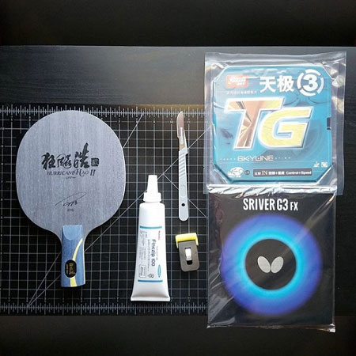

I was born in LA and have lived in Long Beach and Rancho Palos Verdes (or PV) before settling in the small town of San Pedro. If anyone asks me where I'm from, I will always say PV. It's where I went to high school and where I found my group of friends that I consider my second family. The more someone gets to know me, the more they're probably realize that I enoy collecting unusual hobbies.
The first time I successfully threw a playing card was when I was around 12 years old. I started doing cardistry towards the end of high school. Although I never improved immensely in terms of tricks and flourishes, I can throw a playing card lengthwise across a basketball court. I can probably throw them farther, but I haven't tried it yet. Throwing cards definitely isn't the coolest skill someone can have, but it's a skill that I'm proud of since rarely anyone else wants to waste their time practicing it. When I'm not throwing cards, I collect them. Every deck I purchase stays sealed in it's original packaging, and I ony buy limited edition decks. If I like a certain deck enough, I will purchase two just so I can open one. This rarely every happens though.

I've been playing table tennis for about 3 years.I've previously played basketball for 8 years of my childhood, but I seem to be much better at table tennis. It is the one sport that I can play for 5 hours straight without breaking sweat. Trust me, I've tried it. My friends once told me I had a problem, because table tennis was my life at one point. You can't really blame me though, I was almost done with community college and was bored out of my mind. The moment I found out the student center had a table, I claimed it as mine.
I'm an audiophile, but those who know me know that I only listen to one genre of music. Trap. I have my headphones on 90% of the time. It's surprising because I think I have better hearing than many others. I do this because I can't stand silence. I always have to be listening to music unless I'm reading something important. Sometimes when I have trouble sleeping, I put on my headphones and listen to my favorite artists.
Favorite Artists: Tokimonsta, RL Grime, graves, What So Not, Hermitude, Ekali